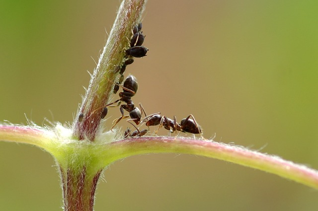
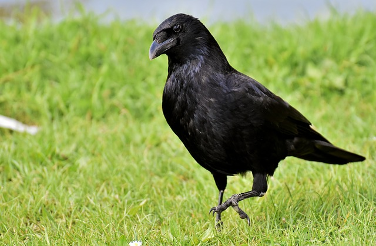
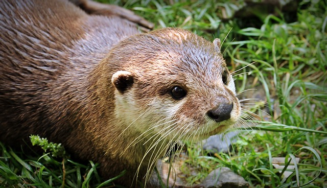
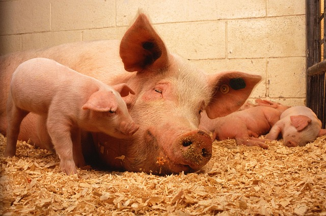
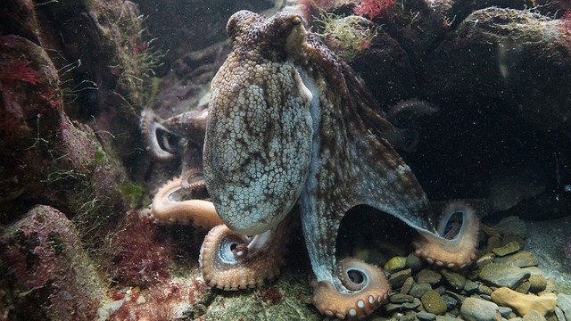
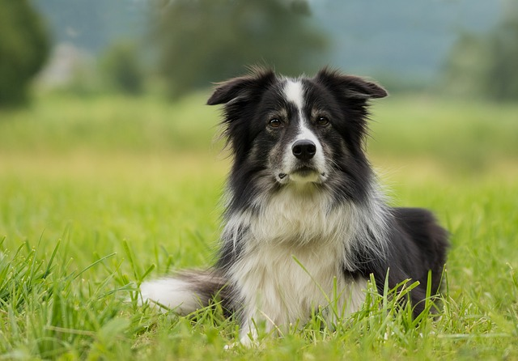
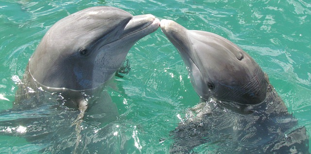
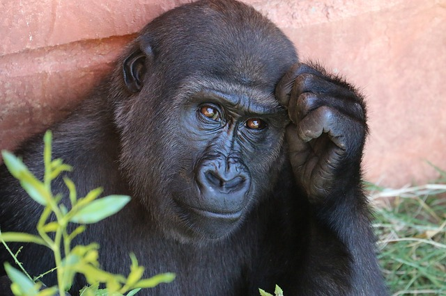

ТОП-10 НАЙРОЗУМНІШИХ ТВАРИН У СВІТІ
Люди, безумовно, найрозумніші істоти в світі – ми вміємо планувати майбутнє, усвідомлюємо своє власне Я, можемо мислити абстрактно, говорити подумки і пам’ятати минуле.
Але наша планета настільки унікальна та дивовижна, що в ході невпинної еволюції витворила цілий ряд розумних тварин, які так само наділені унікальними навичками та вміннями, що виділяють їх з-поміж інших видів.
10. МУРАХА
Не дивуйтеся, ці маленькі комашки, хоч на вигляд і здаються зовсім примітивними, насправді дуже розумні. Мурашине суспільство настільки складно і чітко організоване, що людям в це просто складно повірити: в кожному мурашнику є королева, мурахи-охоронці, мурахи-різноробочі, мурахи-хижаки тощо, кожен з яких виконує відведену йому роботу.
-
РОЗУМНІ НАВИЧКИ МУРАХ:
- Мурахи почали займатися землеробством на 50 мільйонів років раніше за людей: вони вирощують гриби у листі, а потім їдять їх.
- Мурахи формують добре організовані колонії, що сягають довжиною тисячі миль, мають різні секції для ведення сільського господарства, збирання їжі та її зберігання.
- Кожна мурашина колонія має унікальну хімічну ідентичність, за допомогою якої вони здатні розпізнавати “своїх” та “чужинців”.
- Ворони мають найбільший мозок серед всіх видів птахів, за винятком хіба що деяких видів папуг.
- Ворони вміють користуватися зброєю – вони використовують каміння та гальку, щоб атакувати інших птахів.
- Вони досить розумні, щоб розпізнати людські обличчя та приховати їжу від інших птахів.
- Ворони також відомі тим, що використовують різні “підручні засоби” для власних потреб – будівництва гнізда чи добування їжі.
9.ВОРОНА
Ці галасливі та добре знайомі всім птахи є напрочуд розумними. До речі, їхня популяція є однією з найбільших у світі з-поміж усіх видів птахів.
-
РОЗУМНІ НАВИЧКИ ВОРОН:
8. ВИДРА
Ці невеликі ссавці є досить кмітливими і спритно заскочили аж на 8 сходинку рейтингу найрозумніших. Вони вміють не лише розшукувати та добувати їжу за допомогою різноманітних “підручних засобів”, таких як каміння, а й полюбляють справжні веселі ігри і танці.
7. СВИНЯ
Попри загальний стереотип, що свині – це лише свійські тварини, що полюбляють вимащуватись в болоті, ці тварини є дуже розумними. Деякі вчені стверджують, що свині мають більше когнітивних навичок, ніж собаки і навіть немовлята людини.
6. ВОСЬМИНІГ
Восьминоги – це найрозумніші та найкмітливіші істоти серед всіх безхребетних: вони єдині здатні використовувати у власних цілях різні “підручні засоби” та створювати справжні щити від ворогів.
5. СОБАКА 
Найкращі друзі людини посіли в рейтингу найрозумніших п’яту сходинку. Всі ми знаємо, що собаки – істоти розумні. Вони здатні виконувати наші команди, розрізняти і відчувати деякі емоції і навіть виконувати певну роботу. В середньому рівень інтелекту собаки близький до рівня 2-річної людської дитини.
4. КИТ
.jpg)
Будучи найбільшими тваринами на планеті, кити є ще й одними з найрозумніших істот.
Саме їхня соціальна поведінка, техніка комунікації та сила імітації, яку вони здатні показувати, роблять їх одним з найбільш розумних тварин.
3. СЛОН
Слони мають найбільший мозок з-поміж усіх тварин у світі. Слони демонструють надзвичайну соціальну та інтелектуальну поведінку. Вони також є одними з вірних товаришів людей.
2. ДЕЛЬФІН 
Дельфіни – другі за рівнем інтелекту у світі тварин. Люди використовують інтелект дельфінів для вирішення багатьох таємниць у світових океанах. Ці добрі та милі створіння справді вражають своїм рівнем розвитку.
1. ПРИМАТИ 
Примати є другим найбільш інтелектуальним живим організмом у світі після людей та першими серед тварин. Згідно з багатьма науковими теоріями, люди виникли саме від людиноподібних мавп. Сім’я приматів включає в себе таких мавп як шимпанзе, орангутанги, горили і бонобо.